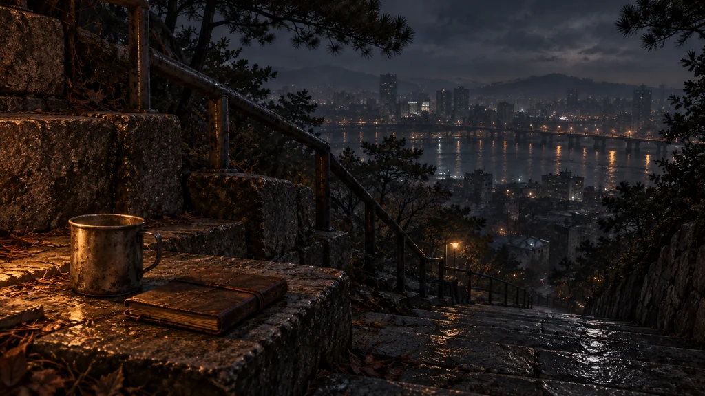
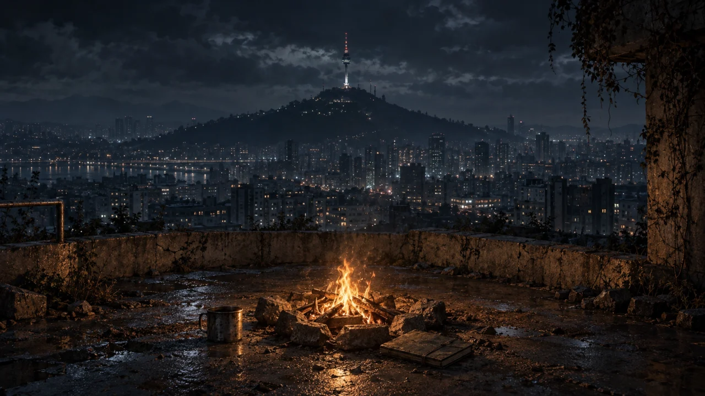
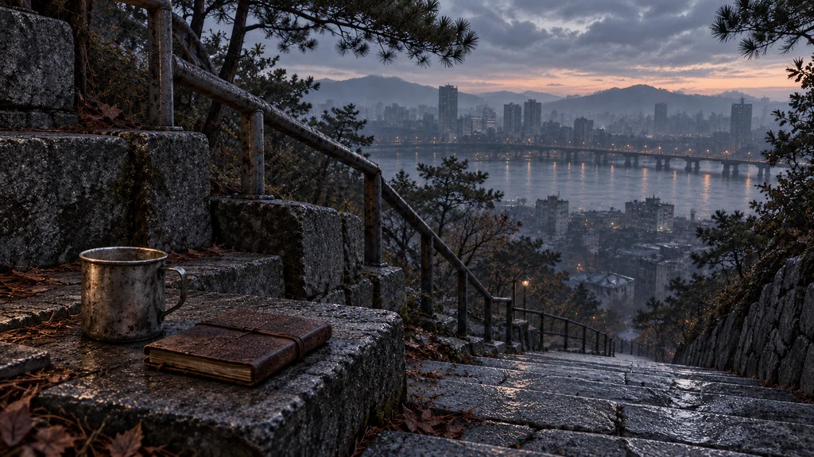
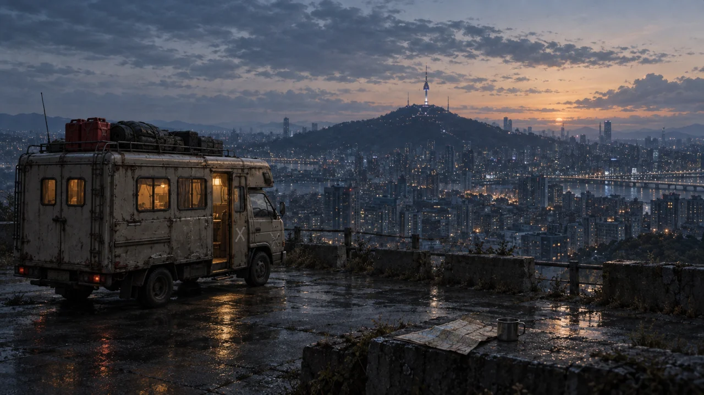
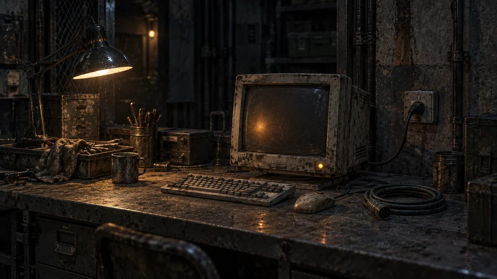
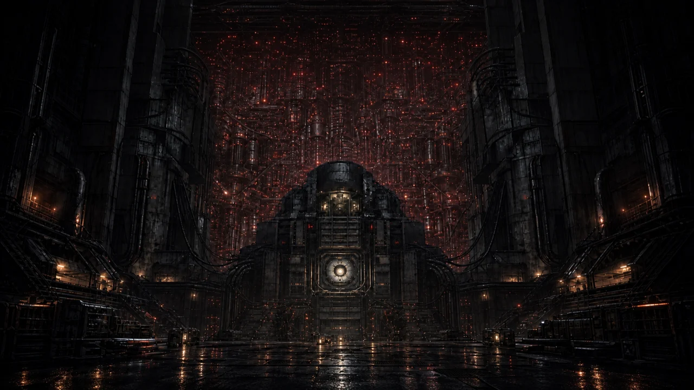

7차 이야기·그림 검증 / 교체 초안
이야기가 있는 곳에서.
남산을 바라보는 그림 대신, 이미 올라온 남산 중턱에서 서울을 내려다봅니다. 잠든 지역 코어와 상위망 정비 단말도 구분합니다.
검토용 초안 · 사용자 승인 · 게임 소스 연결 · 실제 화면 적용·크롭 확인 대기
seoul_night / 두 선택의 공통 장소
남산 계단의 밤

모닥불은 화면 밖입니다. 불을 피우는 선택과 계단에 앉아 기록하는 선택 모두에 쓸 수 있게 사람·동료 물건·켜진 무전기는 넣지 않았습니다.
현재 그림의 위치와 비교

seoul_night / 새벽 전환
같은 자리의 새벽

새 장소로 옮긴 것처럼 보이지 않도록 계단·난간·컵·일지 위치를 유지했습니다. 실제 그림 전환은 기존 본문의 ‘새벽’ 표식을 따릅니다.
현재 새벽 그림과 비교

seoul_uplink_reveal / 세 결정의 공통 대상
별도 전원의 작은 정비 단말

격리 수면을 골라도 코어가 다시 켜진 것처럼 보이지 않습니다. 읽어야 할 응답과 숫자는 그림에 새기지 않고 게임 본문에 남깁니다.
현재 코어 중심 그림과 비교
